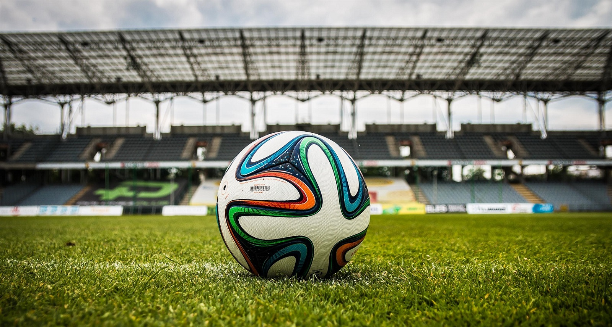
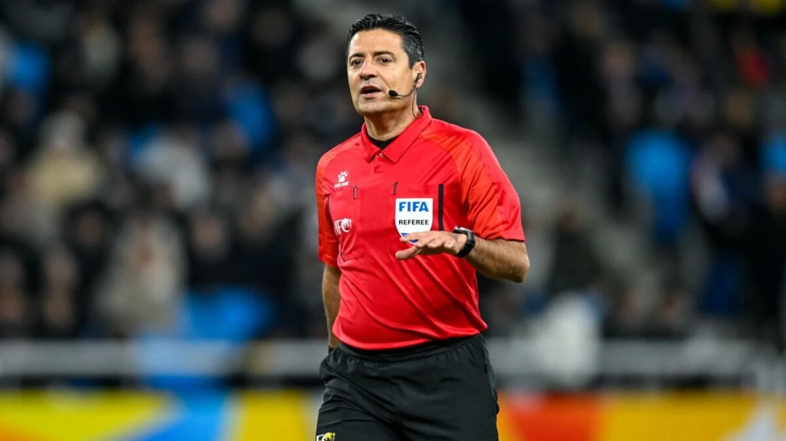
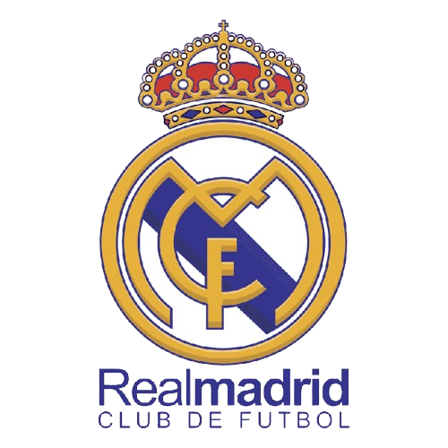
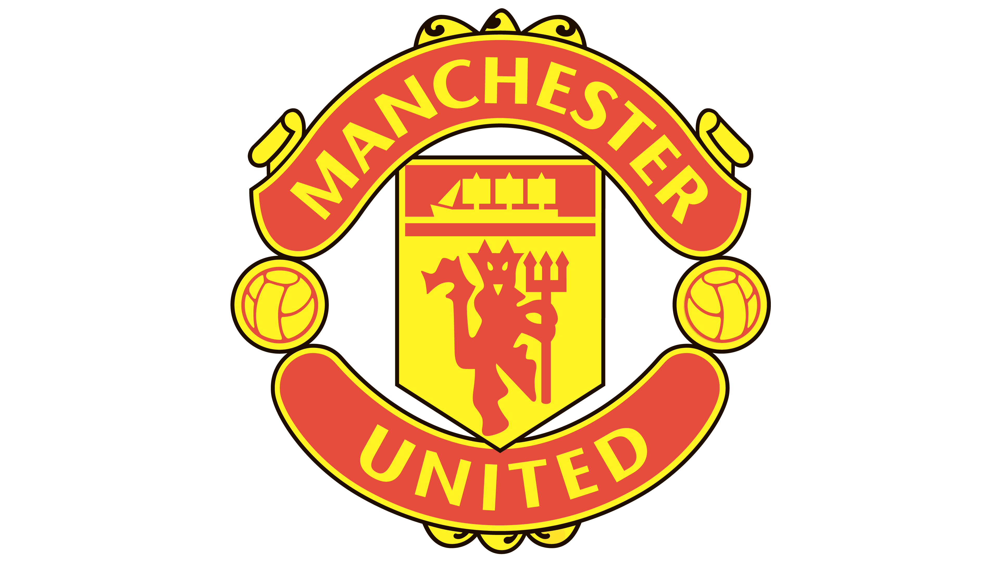
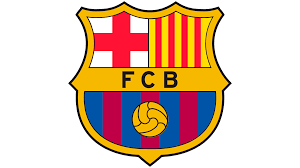
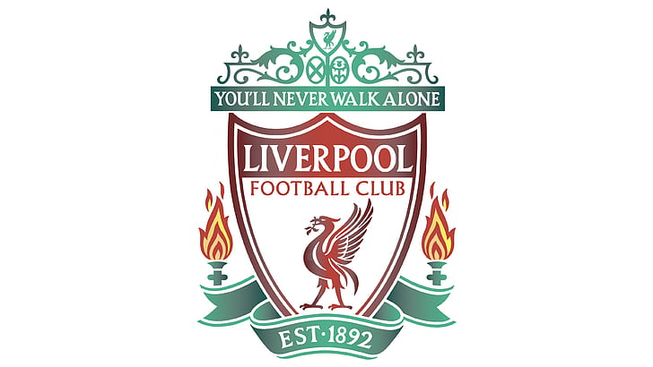
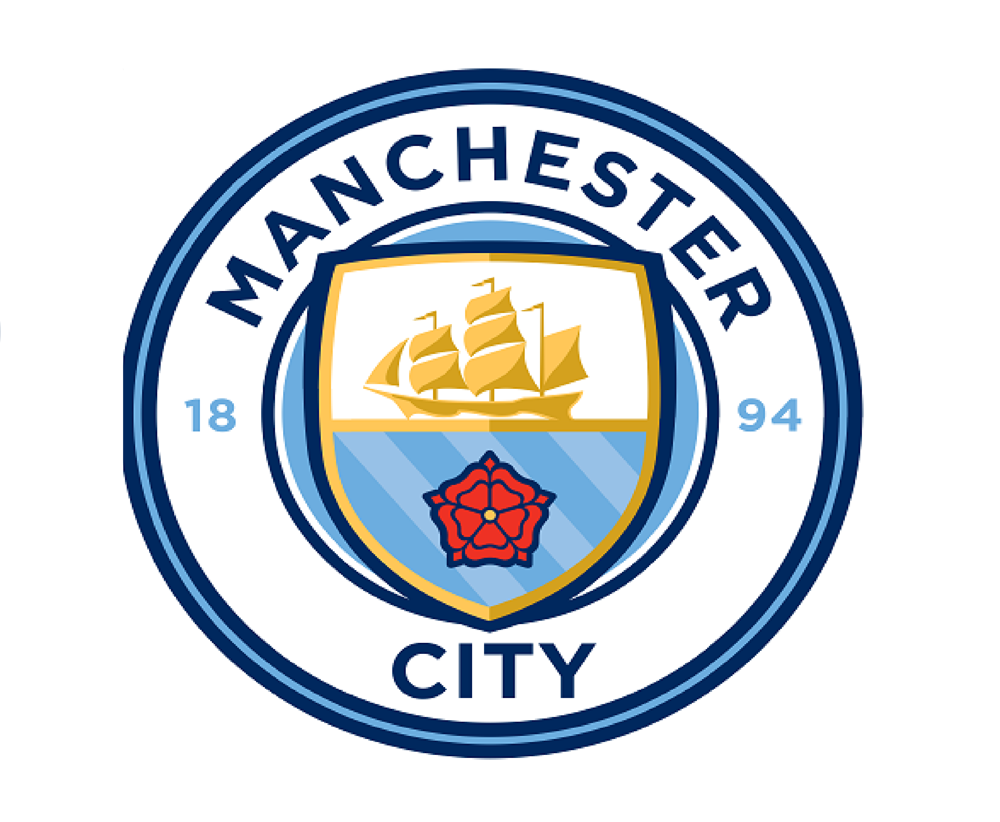
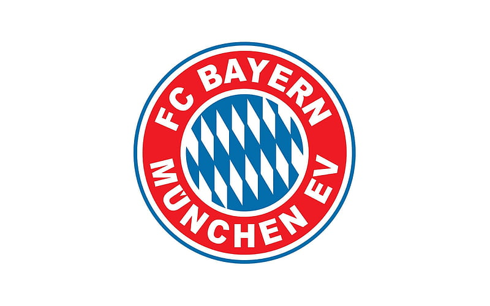
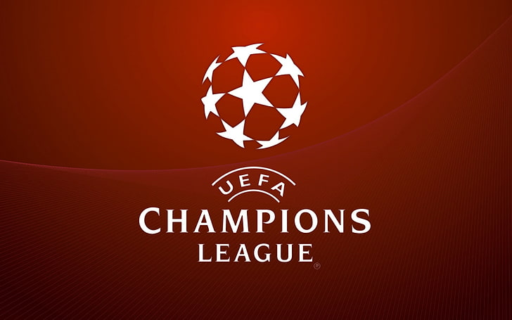

Sepak bola merupakan salah satu olahraga yang digemari oleh banyak orang diseluruh penjuru dunia.
Sejarah Singkat

Dari peninggalan-peninggalan sejarah, kita mengenal beberapa sebutan sepak bola.
Pada zaman China kuno semasa pemerintahan Dinasti Han, sepak bola dikenal dengan istilah tanchu.
Di Italia pada zaman Romawi dikenal sebagai haspartun, di Prancis yang selanjutnya menyebar ke Normandia dan Britania (Inggris),
dikenal dengan choule. Di Yunani kuno dikenal istilah epishyros dan di Jepang dikenal istilah kemari.
Pada 26 Oktober 1863 didirikan sebuah badan yang disebut English Football Assosiation.
Kemudian pada 8 Desember 1863, lahir peraturan permainan sepak bola modern yang disusun oleh badan tersebut yang dalam perkembangannya mengalami perubahan.
Atas inisiatif Guerin (Perancis) pada 21 Mei 1904 berdiri federasi sepak bola internasional dengan nama Federation International de Football Assosiation (FIFA).
Peraturan

Agar permainan sepak bola lancar, adil, tertib, dan terhindar dari kecurangan, kedua tim harus mematuhi tata tertib dan peraturan
resmi sepak bola dari FIFA. Aturan Waktu Permainan, Lama normal permainan sepak bola lazimnya adalah 2x45 menit.
Durasi istirahat pada jeda antar-babak maksimal 15 menit. Jika skor kedua tim masih seri, akan diadakan perpanjangan waktu 2x15 menit.
Apabila dalam durasi tambahan itu skor permainan masih sama, wasit akan mengadakan adu penalti antara kedua tim sampai salah satu tim
mencetak gol lebih banyak.
Jumlah pemain sepak bola dalam sebuah tim sebanyak 11 orang. Apabila jumlah pemain dalam satu tim kurang dari 7 orang karena alasan tertentu
(cedera atau mendapatkan kartu merah) maka permainan akan dihentikan dan tim tersebut dinyatakan kalah. Jumlah pemain pengganti tergantung dari laga yang dimainkan.
Rinciannya yakni, untuk pertandingan internasional antar negara: 11 pemain cadangan sedangkan untuk Pertandingan di liga domestik: 5 pemain cadangan.
Selama jalannya pertandingan, sulit untuk mencegah terjadinya pelanggaran terhadap pemain. Terlebih jika laga tersebut sangat krusial atau mempertemukan dua tim hebat.
Ada peraturan dibuat oleh IFAB tentang pelanggaran pemain, yakni Pemberian Kartu Kuning: Melakukan tackle tidak mengenai bola, Menarik baju tim lawan, Handball yang tidak disengaja,
Diving, Menghentikan laju pemain lawan dengan cara yang tidak sportit, Protes kepada wasit, Membuka baju atau celana saat selebrasi gol.
Sedangkan Pemberian Kartu Merah: Melakukan tackle keras yang tidak menyentuh bola, Mencederai lawan karena tackle terlalu keras, Berkelahi,
Handball secara sengaja, Mengangkat kaki terlalu tinggi, Memicu keributan antara pemain di lapangan, Protes keras terhadap wasit.
Klub Sepak Bola
Klub sepak bola adalah Klub olahraga yang bertindak sebagai suatu entitas di mana tim sepak bola asosiasi mengatur kegiatan olahraganya.
Karena sepak bola merupakan salah satu olahraga yang digemari diseluruh dunia, orang-orang diseluruh dunia membuat Klubnya masing-masing, mulai dari Klub regional hinggal internasional.
Klub-Klub Ternama






Klub Besar Dari Eropa

Eropa menjadi rumah bagi klub-klub sepak bola ternama seperti Real Madrid, Manchester United, dan Barcelona.
Kompetisi seperti Liga Champions Eropa menjadi ajang bagi klub-klub ini untuk bersaing dan memperlihatkan
kehebatan mereka. Setiap klub memiliki sejarah, basis penggemar yang besar, serta pemain-pemain bintang
yang berperan penting dalam kesuksesan mereka.
Klub sepak bola memiliki pengaruh yang besar terhadap dunia olahraga, terutama di Eropa.
Klub-klub seperti Real Madrid, Barcelona, Bayern Munich, dan Paris Saint-Germain dikenal dengan sejarah panjang
serta prestasi gemilang mereka di kompetisi domestik dan internasional.